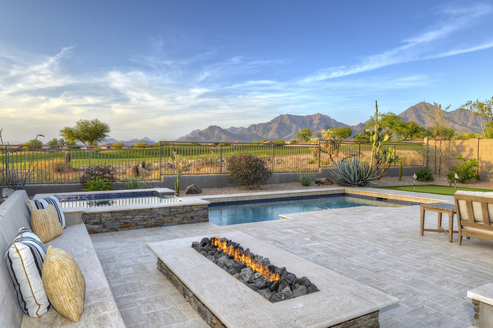
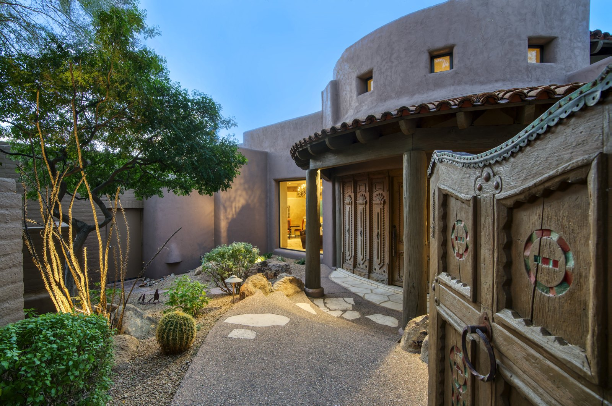
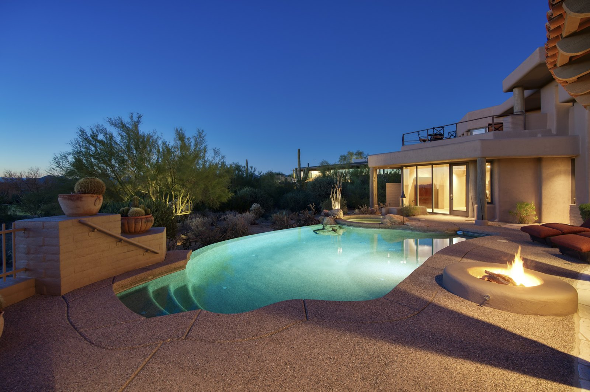

North Scottsdale Golf Communities: Homes and Lifestyle
Welcome to North Scottsdale Golf Communities
Guard-gated golf luxury beneath Pinnacle Peak and the McDowell MountainsWhat to Love
- Championship golf by Nicklaus, Fazio, and Weiskopf
- Guard-gated privacy and resort-caliber clubhouses
- Direct trailhead access into the Sonoran Desert
- Six distinct communities, each with its own character
What is North Scottsdale known for?
North Scottsdale's golf course communities represent the pinnacle of Arizona luxury living. Rather than traditional suburban neighborhoods built around a golf course, these communities blend championship golf, dramatic Sonoran Desert landscapes, guard-gated privacy, hiking, and resort-caliber amenities.
Many homes capture sweeping views of Pinnacle Peak, the McDowell Mountains, city lights, and fairways surrounded by granite boulder outcroppings and saguaros. The area includes six premier communities, each with a distinct character: Silverleaf, Estancia, Desert Mountain, Desert Highlands, Troon North, and Whisper Rock.
What is Silverleaf like?
Silverleaf, part of DC Ranch, is widely considered the crown jewel of Scottsdale luxury, with a European-inspired atmosphere tucked into the foothills of the McDowell Mountains. Wide tree-lined streets, Mediterranean architecture, and a Tom Weiskopf-designed championship golf course define the community, along with a clubhouse, spa, fine dining, and direct access to more than 50 miles of McDowell Sonoran Preserve trails.
What is Estancia like?
Estancia is often considered Arizona's most exclusive golf club, built around understated luxury rather than social activity. Homes are positioned on large lots among granite boulders beneath Pinnacle Peak, and the Tom Fazio-designed golf course is consistently ranked among Arizona's finest. Membership is members-only, and the community emphasizes low density and architectural quality over clubhouse programming.
Estancia's members-only culture and low-density design position it toward buyers who prioritize privacy and quiet desert serenity over an active social calendar.
What is Desert Mountain like?
Desert Mountain is unlike any other community in Arizona, spread across roughly 8,000 acres in the high Sonoran Desert. It offers seven private Jack Nicklaus Signature golf courses, miles of private hiking trails, tennis, pickleball, and multiple clubhouses, along with cooler elevations than much of Scottsdale.
With seven courses and an active clubhouse calendar, Desert Mountain is built around abundant golf and amenity access, which distinguishes it from the more understated programming at Estancia or Whisper Rock.
What is Desert Highlands like?
Desert Highlands is one of Scottsdale's original luxury golf communities, sitting immediately below Pinnacle Peak, and it helped define North Scottsdale luxury living. The Jack Nicklaus-designed course recently underwent a major restoration [VERIFY completion date before publishing], keeping it among Arizona's premier private clubs. The community has a classic country club atmosphere, tennis and fitness facilities, mature landscaping, and mountain views.
What is Troon North like?
Troon North offers some of the Valley's most iconic desert golf, located at the base of Pinnacle Peak. The Monument and Pinnacle courses are internationally recognized and showcase dramatic rock formations, desert washes, and Sonoran scenery. Unlike most other private clubs in North Scottsdale, both Troon North courses are open to the public, with green fees starting around $175 depending on season. [VERIFY current green fees] Troon North itself includes a mix of gated, guard-gated, and non-gated neighborhoods, close to the Four Seasons Resort Scottsdale at Troon North.
The mix of housing types, combined with strong seasonal-buyer demand, makes Troon North one of the more accessible entry points into North Scottsdale golf living. The adjacent Four Seasons Resort adds an on-site spa and Talavera, its signature modern Spanish steakhouse, as neighborhood amenities available to residents and guests alike.
What is Whisper Rock like?
Whisper Rock is built around golf and privacy, with invitation-only membership and two acclaimed courses winding through natural desert terrain with minimal visual intrusion from homes. Lots are large and custom, and the community favors a casual, low-key luxury over a highly social clubhouse scene.
How do North Scottsdale's golf communities compare?
| Community | Vibe | Golf |
|---|---|---|
| Silverleaf | Ultra-luxury, European elegance | Private |
| Estancia | Exclusive, quiet, architectural | Private |
| Desert Mountain | Active resort lifestyle | Private (7 courses) |
| Desert Highlands | Classic country club | Private |
| Troon North | Iconic desert golf | Public & residential |
| Whisper Rock | Pure golf, understated luxury | Private, invitation-only |
The choice between communities generally comes down to lifestyle rather than price alone. Silverleaf offers prestige and architecture; Estancia offers serenity and exclusivity; Desert Mountain offers the widest range of golf and amenities; Troon North offers the broadest range of price points; and Whisper Rock centers entirely on golf and privacy.
What should buyers know before purchasing in North Scottsdale?
Most of these communities require or strongly favor club membership as part of the ownership experience, and membership costs, waitlists, and initiation fees vary significantly by club and should be confirmed directly with each community before purchasing. [VERIFY current membership terms per club]
Because these are golf-oriented communities, buyers should tour on a day the course is active to gauge noise, cart-path proximity, and privacy from a specific lot, since these vary block to block even within the same community.



Common Questions
What is the most exclusive golf community in North Scottsdale?
Estancia and Silverleaf are generally considered North Scottsdale's most exclusive communities, though they offer different experiences: Estancia emphasizes quiet, members-only privacy, while Silverleaf combines prestige with a more social, resort-like atmosphere.
Do you have to join the golf club to live in these communities?
Requirements vary by community. Some, like Whisper Rock, require invitation-only membership as part of the culture, while others allow non-member residents. Membership terms should be confirmed directly with each club before purchasing.
How many golf courses does Desert Mountain have?
Desert Mountain offers seven private Jack Nicklaus Signature golf courses across roughly 8,000 acres, making it one of the largest golf-amenity communities in the country.
What's the difference between Troon North and Whisper Rock?
Troon North includes a mix of gated, guard-gated, and non-gated neighborhoods with a broad range of price points and a resort feel, while Whisper Rock is a single invitation-only, golf-focused community centered on privacy and course access.
Can the public play golf in North Scottsdale?
Yes. Troon North's Monument and Pinnacle courses are open to the public, unlike the members-only clubs at Silverleaf, Estancia, Desert Mountain, Desert Highlands, and Whisper Rock. Green fees start around $175 depending on season.
Is there a resort in North Scottsdale's golf communities?
The Four Seasons Resort Scottsdale at Troon North sits within the Troon North community, offering an on-site spa and the signature restaurant Talavera, a modern Spanish steakhouse, alongside priority tee times on Troon North's two courses.


Considering a Move to North Scottsdale Golf Communities?
Call 480-734-0870 or email laura@laurajorden.com for current listings and market data.
Contact Laura